16 Lặp, vòng lặp, và danh sách
Các nhà dịch tễ học thường phải phân tích lặp lại trên các phân nhóm như quốc gia, quận hoặc nhóm tuổi. Đây chỉ là một vài trong số rất nhiều tình huống yêu cầu việc lặp lại. Mã hóa các thao tác lặp lại của bạn bằng cách sử dụng các phương pháp bên dưới sẽ giúp bạn thực hiện các tác vụ lặp đi lặp lại như vậy nhanh hơn, giảm khả năng xảy ra lỗi và giảm độ dài code.
Chương này sẽ giới thiệu hai cách tiếp cận đối với các thao tác lặp lại - sử dụng các vòng lặp for và package purrr.
- vòng lặp for lặp lại code trên một loạt đầu vào, nhưng ít phổ biến hơn trong R so với các ngôn ngữ lập trình khác. Tuy nhiên, chúng tôi giới thiệu chúng ở đây như một công cụ học tập và tham khảo
- Package purrr là phương pháp tiếp cận tidyverse đối với các thao tác lặp lại - nó hoạt động bằng cách “maps” (áp dụng) một hàm trên nhiều đầu vào (giá trị, cột, datasets, v.v.)
Trong chương này, chúng tôi sẽ lấy một số ví dụ như:
- Nhập và xuất nhiều tệp
- Tạo các đường cong dịch bệnh cho nhiều tỉnh
- Chạy T-tests cho nhiều cột trong dataframe
Trong phần purrr, chúng tôi cũng sẽ cung cấp một số ví dụ về cách tạo và xử lý danh sách lists.
16.1 Chuẩn bị
Gọi packages
Đoạn code này hiển thị cách gọi các packages cần thiết cho phần phân tích. Trong sổ tay này, chúng tôi nhấn mạnh đến hàm p_load() từ package pacman, cài đặt package nếu cần và gọi nó ra để sử dụng. Bạn cũng có thể gọi các package đã cài đặt với hàm library() từ base R. Xem chương R cơ bản để biết thêm thông tin về packages R.
Nhập dữ liệu
Chúng tôi nhập dataset về các trường hợp từ một vụ dịch Ebola mô phỏng. Nếu bạn muốn làm theo, hãy nhấp để tải xuống linelist “sạch” (dưới dạng tệp .rds). Nhập dữ liệu bằng hàm import() từ package rio (nó xử lý nhiều loại tệp như .xlsx, .csv, .rds - xem chương Nhập xuất dữ liệu để biết chi tiết).
50 hàng đầu tiên của linelist được hiển thị bên dưới.
16.2 vòng lặp for
vòng lặp for trong R
Vòng lặp for không được nhấn mạnh trong R, nhưng phổ biến trong các ngôn ngữ lập trình khác. Khi mới bắt đầu, chúng có thể hữu ích để học và thực hành vì chúng dễ “khám phá”, “gỡ lỗi” hơn và nắm bắt chính xác những gì đang xảy ra cho mỗi lần lặp, đặc biệt là khi bạn chưa cảm thấy thoải mái khi viết các hàm của riêng mình.
Bạn có thể chuyển nhanh qua phần vòng lặp for tới phần lặp với các hàm được tạo với purrr (xem phần bên dưới).
Cấu phần cốt lõi
Một vòng lặp for có ba phần cốt lõi:
- Chuỗi các phần tử cần lặp lại
- Các thao tác để tiến hành cho mỗi phần tử trong chuỗi
- Vùng chứa cho kết quả (tùy chọn)
Cú pháp cơ bản là: for (phần tử trong chuỗi) {các thao tác thực hiện với phần tử}. Lưu ý dấu ngoặc đơn và dấu ngoặc nhọn. Kết quả có thể được in ra console hoặc được lưu trữ trong một đối tượng vùng chứa.
Dưới đây là một ví dụ đơn giản về vòng lặp for.
for (num in c(1,2,3,4,5)) { # the SEQUENCE is defined (numbers 1 to 5) and loop is opened with "{"
print(num + 2) # The OPERATIONS (add two to each sequence number and print)
} # The loop is closed with "}" ## [1] 3
## [1] 4
## [1] 5
## [1] 6
## [1] 7Chuỗi
Đây là phần “for” của vòng lặp for - các thao tác sẽ chạy “cho (for)” từng phần tử trong chuỗi. Chuỗi có thể là một loạt các giá trị (ví dụ: tên của khu vực pháp lý, bệnh, tên cột, phần tử danh sách, v.v.) hoặc nó có thể là một chuỗi các số liên tiếp (ví dụ: 1,2,3,4,5). Mỗi cách tiếp cận được mô tả dưới đây có các tiện ích riêng của chúng.
Cấu trúc cơ bản của biểu thức chuỗi là item in vector.
- Bạn có thể viết bất kỳ ký tự hoặc từ nào thay cho “item” (ví dụ: “i”, “num”, “hosp”, “district”, v.v.). Giá trị của “item” này thay đổi theo từng lần lặp lại của vòng lặp, tiếp tục qua từng giá trị trong vector.
- Vector có thể là các giá trị ký tự, tên cột hoặc có thể là một chuỗi số - đây là những giá trị sẽ thay đổi theo mỗi lần lặp. Bạn có thể sử dụng chúng trong các thao tác vòng lặp for bằng cách sử dụng thuật ngữ “item”.
Ví dụ: chuỗi giá trị ký tự
Trong ví dụ này, một vòng lặp được thực hiện cho mỗi giá trị được xác định trước trong một vector ký tự của tên bệnh viện.
# make vector of the hospital names
hospital_names <- unique(linelist$hospital)
hospital_names # print## [1] "Other" "Missing"
## [3] "St. Mark's Maternity Hospital (SMMH)" "Port Hospital"
## [5] "Military Hospital" "Central Hospital"Chúng tôi đã chọn thuật ngữ hosp để đại diện cho các giá trị từ vector hospital_names. Đối với lần lặp đầu tiên của vòng lặp, giá trị của hosp sẽ là hospital_names[[1]]. Đối với vòng lặp thứ hai, nó sẽ là hospital_names[[2]]. Và cứ như thế…
Ví dụ: chuỗi tên cột
Đây là một biến thể của chuỗi ký tự ở trên, trong đó tên của một đối tượng R hiện có được trích xuất và trở thành vector. Ví dụ, tên cột của dataframe. Trong code hoạt động của vòng lặp for, tên cột có thể được sử dụng để lập chỉ mục (tập hợp con) dataframe ban đầu của chúng.
Dưới đây, chuỗi là names() (tên cột) của dataframe linelist. Tên “item” của chúng ta là col, sẽ đại diện cho từng tên cột khi các vòng lặp diễn ra.
Với ví dụ này, chúng tôi bao gồm code thao tác bên trong vòng lặp for, được chạy cho mọi giá trị trong chuỗi. Trong code này, các giá trị trình tự (tên cột) được sử dụng để chỉ mục (tập hợp con) từng phần tử một trong linelist. Như đã dạy trong chương R cơ bản, dấu ngoặc vuông kép [[]] được sử dụng cho tập hợp con. Cột kết quả được chuyển đến is.na(), sau đó đến sum() để tạo ra số giá trị trong cột bị thiếu. Kết quả được in ra console - một số cho mỗi cột.
Một lưu ý về lập chỉ mục với tên cột - bất cứ khi nào tham chiếu đến chính cột đó, đừng chỉ viết “col”! col chỉ đại diện cho tên cột ký tự! Để tham chiếu đến toàn bộ cột, bạn phải sử dụng tên cột dưới dạng chỉ mục trên linelist thông qua linelist[[col]].
for (col in names(linelist)){ # loop runs for each column in linelist; column name represented by "col"
# Example operations code - print number of missing values in column
print(sum(is.na(linelist[[col]]))) # linelist is indexed by current value of "col"
}## [1] 0
## [1] 0
## [1] 2087
## [1] 256
## [1] 0
## [1] 936
## [1] 1323
## [1] 278
## [1] 86
## [1] 0
## [1] 86
## [1] 86
## [1] 86
## [1] 0
## [1] 0
## [1] 0
## [1] 2088
## [1] 2088
## [1] 0
## [1] 0
## [1] 0
## [1] 249
## [1] 249
## [1] 249
## [1] 249
## [1] 249
## [1] 149
## [1] 765
## [1] 0
## [1] 256Dãy số
Theo cách tiếp cận này, dãy số là một chuỗi các số liên tiếp. Do đó, giá trị của “item” không phải là giá trị ký tự (ví dụ: “Central Hospital” hoặc “date_onset”) mà là một số. Điều này rất hữu ích cho việc lặp qua các dataframes, vì bạn có thể sử dụng số “item” bên trong vòng lặp for để lập chỉ mục dataframe theo số hàng.
Ví dụ: giả sử bạn muốn lặp qua mọi hàng trong dataframe của mình và trích xuất thông tin nhất định. “Item” của bạn sẽ là số hàng số. Thông thường, “item” trong trường hợp này được viết là i.
Quá trình vòng lặp for có thể được giải thích bằng lời là “đối với mọi mục trong chuỗi số từ 1 đến tổng số hàng trong dataframe của tôi, hãy thực hiện X”. Đối với lần lặp đầu tiên của vòng lặp, giá trị của “item” i sẽ là 1. Đối với lần lặp thứ hai,i sẽ là 2, v.v.
Đây là hình thức của chuỗi trong code: for (i in 1:nrow(linelist)) {OPERATIONS CODE} trong đó i đại diện cho “item”và 1:nrow(linelist) tạo ra một chuỗi liên tiếp số từ 1 đến số hàng trong linelist.
Nếu bạn muốn chuỗi là số, nhưng bạn đang bắt đầu từ một vector (không phải dataframe), hãy sử dụng hàm tắt seq_along() để trả về một dãy số cho mỗi phần tử trong vector. Ví dụ: for (i in seq_along(hospital_names) {OPERATIONS CODE}.
Đoạn code dưới đây thực sự trả về các số, sẽ trở thành giá trị của i trong vòng lặp tương ứng của chúng.
## [1] 1 2 3 4 5 6Một lợi thế của việc sử dụng các số trong chuỗi là cũng dễ dàng sử dụng số i để lập chỉ mục vùng chứa lưu trữ các kết quả đầu ra của vòng lặp. Có một ví dụ về điều này trong phần Thao tác bên dưới.
Các thao tác
Đây là code trong dấu ngoặc nhọn {} của vòng lặp for. Bạn muốn code này chạy cho từng “item” trong chuỗi. Do đó, hãy thận trọng với mọi phần code của bạn thay đổi bởi “item” đều được mã hóa chính xác để nó thực sự thay đổi! Ví dụ. nhớ sử dụng [[ ]] để lập chỉ mục.
Trong ví dụ dưới đây, chúng tôi lặp lại từng hàng trong linelist. Giá trị gender và age của mỗi hàng được dán lại với nhau và được lưu trữ trong vector ký tự vùng chứa cases_demographics. Lưu ý cách chúng tôi cũng sử dụng lập chỉ mục [[i]] để lưu đầu ra của vòng lặp vào vị trí chính xác trong vector “container”.
# create container to store results - a character vector
cases_demographics <- vector(mode = "character", length = nrow(linelist))
# the for loop
for (i in 1:nrow(linelist)){
# OPERATIONS
# extract values from linelist for row i, using brackets for indexing
row_gender <- linelist$gender[[i]]
row_age <- linelist$age_years[[i]] # don't forget to index!
# combine gender-age and store in container vector at indexed location
cases_demographics[[i]] <- str_c(row_gender, row_age, sep = ",")
} # end for loop
# display first 10 rows of container
head(cases_demographics, 10)## [1] "m,2" "f,3" "m,56" "f,18" "m,3" "f,16" "f,16" "f,0" "m,61" "f,27"Vùng chứa
Đôi khi kết quả của vòng lặp for của bạn sẽ được in ra console hoặc cửa sổ RStudio Plots. Lần khác, bạn sẽ muốn lưu trữ các kết quả đầu ra trong một “vùng chứa” để sử dụng sau này. Một vùng chứa như vậy có thể là một vector, một data frame hoặc thậm chí là một danh sách.
Hiệu quả nhất là tạo vùng chứa cho các kết quả thậm chí trước khi bắt đầu vòng lặp for. Trong thực tế, điều này có nghĩa là tạo một vector, data frame hoặc danh sách trống. Chúng có thể được tạo bằng các hàm vector() cho vectors hoặc danh sách, hoặc với matrix() và data.frame() cho một data frame.
Vector trống
Sử dụng vector() và chỉ định mode = dựa trên lớp phân loại dự kiến của các đối tượng mà bạn sẽ chèn - “double” (để giữ số), “ký tự” hoặc “logic”. Bạn cũng nên đặt trước length =. Đây phải là độ dài chuỗi vòng lặp for của bạn.
Giả sử bạn muốn lưu trữ thời gian nhập viện trễ trung bình cho mỗi bệnh viện. Bạn sẽ sử dụng “double” và đặt độ dài là số đầu ra dự kiến (số bệnh viện duy nhất trong data set).
delays <- vector(
mode = "double", # we expect to store numbers
length = length(unique(linelist$hospital))) # the number of unique hospitals in the datasetData frame trống
Bạn có thể tạo một data frame trống bằng cách chỉ định số hàng và cột như sau:
Danh sách trống
Bạn có thể muốn lưu trữ một số biểu đồ được tạo bởi vòng lặp for trong danh sách. Một danh sách giống như vector, nhưng chứa các đối tượng R khác bên trong nó có thể thuộc các lớp khác nhau. Các phần tử trong danh sách có thể là một số, một dataframe, một vector và thậm chí là một danh sách khác.
Bạn thực sự khởi tạo một danh sách trống bằng cách sử dụng cùng một lệnh vector() như trên, nhưng với mode = "list". Chỉ định độ dài như bạn muốn.
In
Lưu ý rằng để in từ bên trong vòng lặp for, bạn có thể sẽ cần phải đưa hàm print() vào.
Trong ví dụ dưới đây, chuỗi là một vector ký tự rõ ràng, được sử dụng để đặt linelist con theo bệnh viện. Kết quả không được lưu trữ trong vùng chứa mà được in ra console với hàm print().
for (hosp in hospital_names){
hospital_cases <- linelist %>% filter(hospital == hosp)
print(nrow(hospital_cases))
}## [1] 885
## [1] 1469
## [1] 422
## [1] 1762
## [1] 896
## [1] 454Kiểm tra vòng lặp for
Để kiểm tra vòng lặp của mình, bạn có thể chạy lệnh để gán tạm thời “item”, chẳng hạn như i <- 10 hoặc hosp <- "Central Hospital". Thực hiện việc này bên ngoài vòng lặp và sau đó chỉ chạy code thao tác của bạn (code trong dấu ngoặc nhọn) để xem liệu kết quả mong đợi có được tạo ra hay không.
Lặp lại biểu đồ
Để đặt tất cả ba thành phần lại với nhau (vùng chứa, trình tự và thao tác), chúng ta hãy cố gắng vẽ biểu đồ đường cong dịch bệnh cho mỗi bệnh viện (xem chương Đường cong dịch bệnh).
Chúng tôi có thể tạo ra một đường cong dịch bệnh đẹp về tất cả các trường hợp theo giới tính bằng cách sử dụng package incidence2 như bên dưới:
# create 'incidence' object
outbreak <- incidence2::incidence(
x = linelist, # dataframe - complete linelist
date_index = "date_onset", # date column
interval = "week", # aggregate counts weekly
groups = "gender") # group values by gender
#na_as_group = TRUE) # missing gender is own group
# plot epi curve
ggplot(outbreak, # incidence object name
aes(x = date_index, # aesthetics and axes
y = count,
fill = gender), # Fill colour of bars by gender
color = "black" # Contour colour of bars
) +
geom_col() +
facet_wrap(~gender) +
theme_bw() +
labs(title = "Outbreak of all cases", #title
x = "Counts",
y = "Date",
fill = "Gender",
color = "Gender")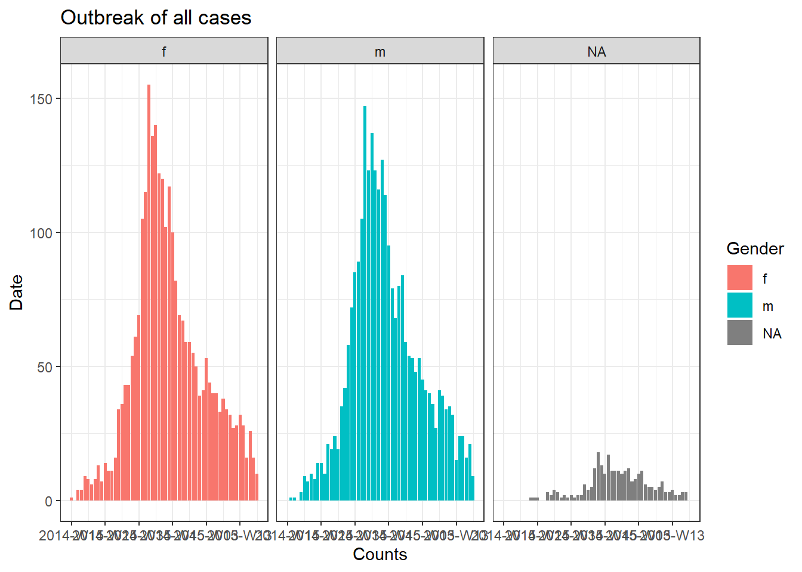
Để tạo ra một biểu đồ riêng cho từng trường hợp của bệnh viện, chúng ta có thể đặt code đường cong dịch bệnh này trong vòng lặp for.
Đầu tiên, chúng tôi lưu một vector được đặt tên duy nhất của các tên bệnh viện, hospital_names. Vòng lặp for sẽ chạy một lần cho mỗi tên sau: for (hosp in hospital_names). Mỗi lần lặp lại của vòng lặp for, tên bệnh viện hiện tại từ vector sẽ được biểu diễn dưới dạng hosp để sử dụng trong vòng lặp.
Trong các thao tác vòng lặp, bạn có thể viết code R như bình thường, nhưng cần biết rằng giá trị của “item” (hosp trong trường hợp này) sẽ thay đổi. Trong vòng lặp này:
- Một
filter()được áp dụng cholinelist, sao cho cộthospitalphải bằng giá trị hiện tại củahosp
- Đối tượng tỷ lệ mắc được tạo trên linelist đã lọc
- Biểu đồ cho bệnh viện hiện tại được tạo, với tiêu đề tự động điều chỉnh sử dụng
hosp
- Biểu đồ cho bệnh viện hiện tại được lưu tạm thời và sau đó được in
- Sau đó, vòng lặp di chuyển tiếp để lặp lại với bệnh viện tiếp theo trong
hospital_names
# make vector of the hospital names
hospital_names <- unique(linelist$hospital)
# for each name ("hosp") in hospital_names, create and print the epi curve
for (hosp in hospital_names) {
# create incidence object specific to the current hospital
outbreak_hosp <- incidence2::incidence(
x = linelist %>% filter(hospital == hosp), # linelist is filtered to the current hospital
date_index = "date_onset",
interval = "week",
groups = "gender"
#na_as_group = TRUE
)
# Create and save the plot. Title automatically adjusts to the current hospital
plot_hosp <- ggplot(outbreak_hosp, # incidence object name
aes(x = date_index, #axes
y = count,
fill = gender), # fill colour by gender
color = "black" # colour of bar contour
) +
geom_col() +
facet_wrap(~gender) +
theme_bw() +
labs(title = stringr::str_glue("Epidemic of cases admitted to {hosp}"), #title
x = "Counts",
y = "Date",
fill = "Gender",
color = "Gender")
# With older versions of R, remove the # before na_as_group and use this plot command instead.
# plot_hosp <- plot(
# outbreak_hosp,
# fill = "gender",
# color = "black",
# title = stringr::str_glue("Epidemic of cases admitted to {hosp}")
# )
# print the plot for hospitals
print(plot_hosp)
} # end the for loop when it has been run for every hospital in hospital_names  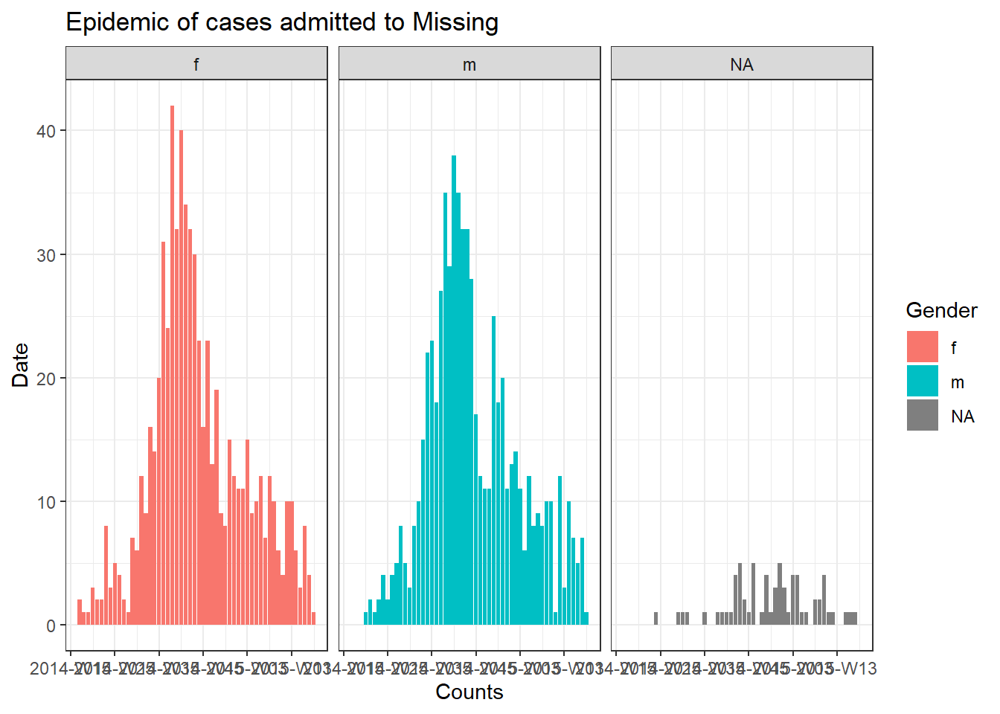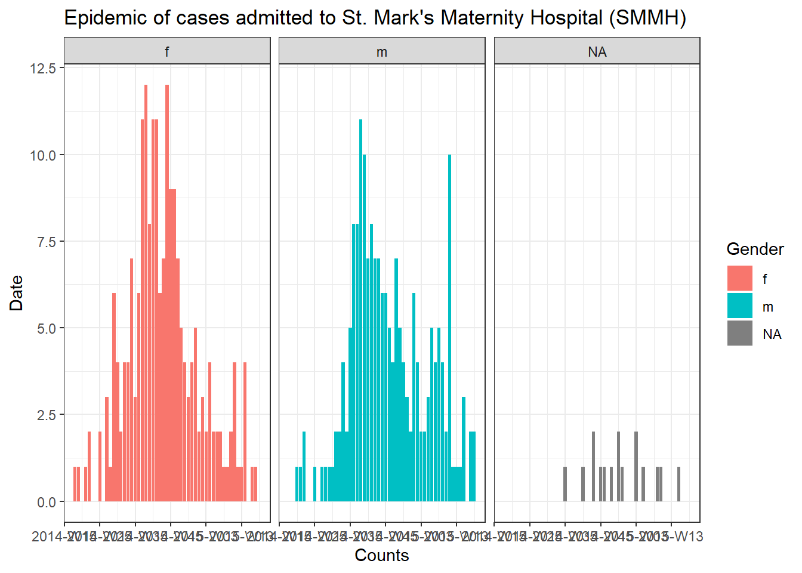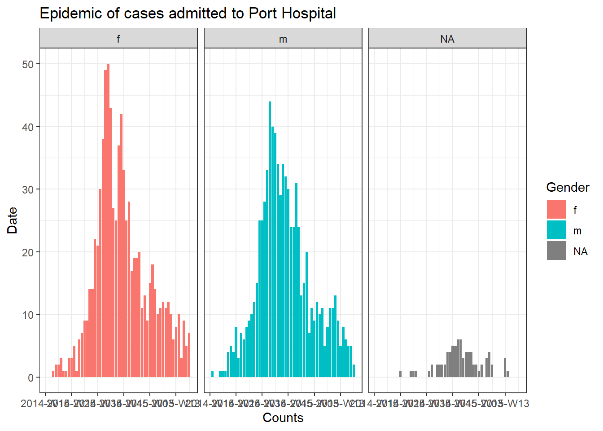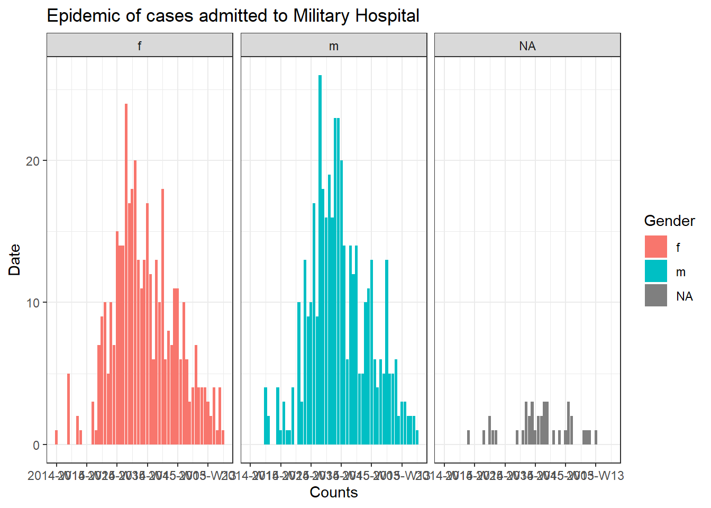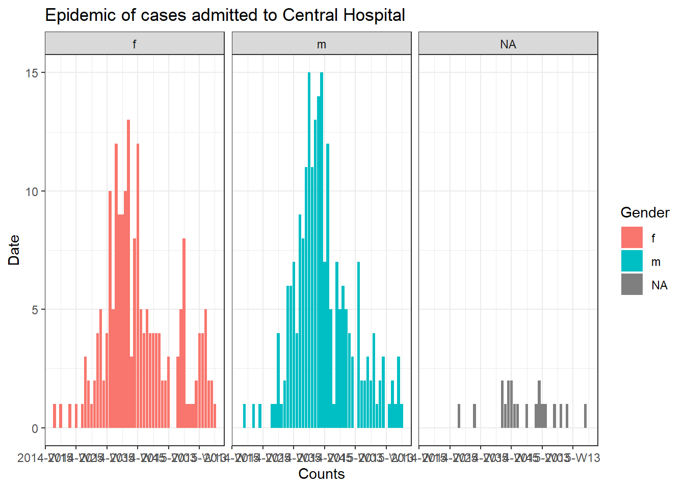
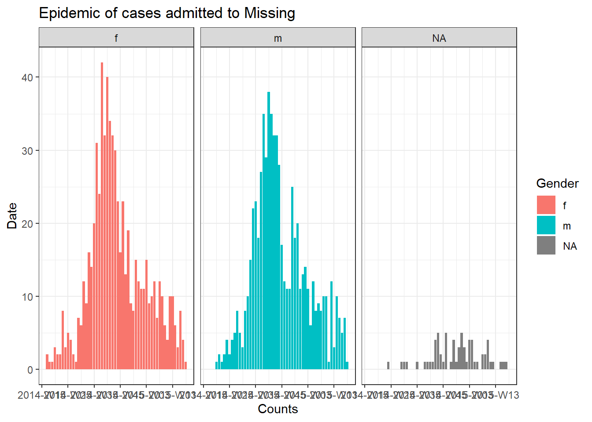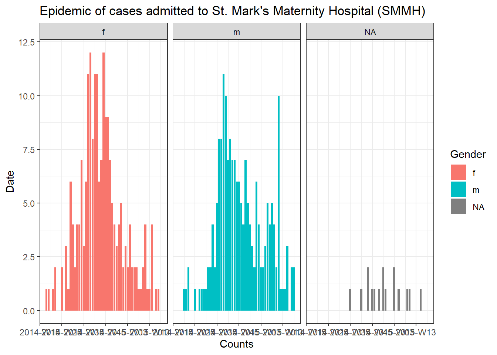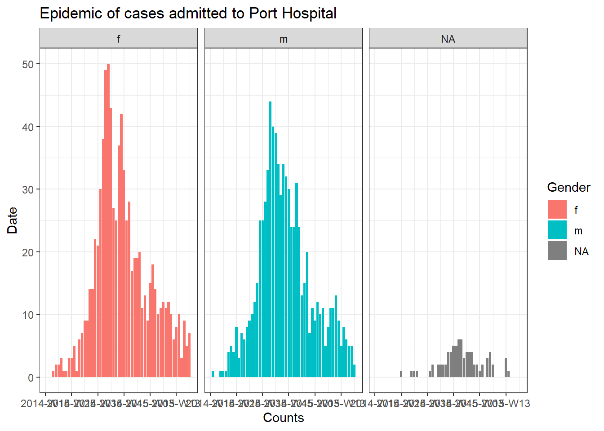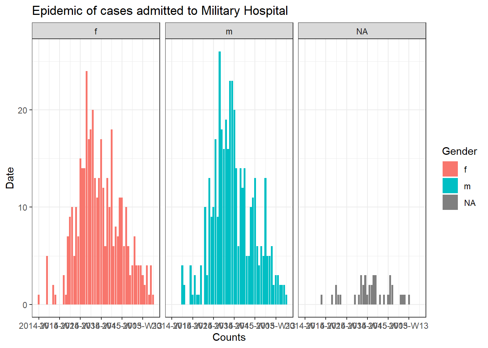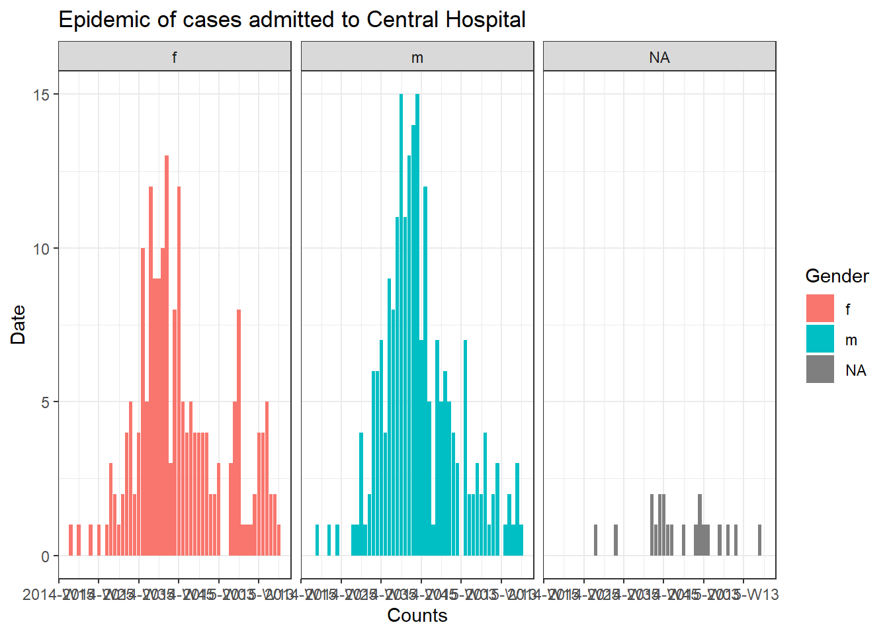
Theo dõi tiến trình của một vòng lặp
Một vòng lặp có nhiều lần lặp có thể chạy trong nhiều phút hoặc thậm chí hàng giờ. Do đó, có thể hữu ích khi in tiến trình ra R console. Câu lệnh if dưới đây có thể được đặt trong các thao tác vòng lặp để in mỗi số thứ 100. Chỉ cần điều chỉnh nó để i là “item” trong vòng lặp của bạn.
16.3 purrr và các danh sách
Một cách tiếp cận khác đối với các thao tác lặp là package purrr - nó là phương pháp tidyverse để lặp lại.
Nếu bạn phải thực hiện cùng một tác vụ nhiều lần, có lẽ bạn nên tạo một giải pháp tổng thể có thể sử dụng trên nhiều đầu vào. Ví dụ: tạo các biểu đồ cho nhiều khu vực pháp lý, hoặc nhập và kết hợp nhiều tệp.
Ngoài ra còn có một số lợi thế khác đối với purrr - bạn có thể sử dụng nó với các pipes %>%, nó xử lý lỗi tốt hơn vòng lặp for bình thường, và có cú pháp khá rõ ràng và đơn giản! Nếu bạn đang sử dụng vòng lặp for, bạn có thể tạo vòng lặp rõ ràng và ngắn gọn hơn với purrr!
Hãy nhớ rằng purrr là một công cụ lập trình theo hàm. Có nghĩa là, các thao tác lặp đi lặp lại được gói gọn trong các hàm. Xem chương Viết hàm để tìm hiểu cách viết hàm của riêng bạn.
purrr cũng gần như hoàn toàn dựa trên danh sách và vectors - vì vậy hãy nghĩ về nó như là áp dụng một hàm cho mỗi phần tử của danh sách/vector đó!
Tải packages
purrr là một phần của tidyverse, vì vậy không cần cài đặt/tải một package riêng biệt.
map()
Một hàm cốt lõi của purrr là map(), hàm này “maps” (áp dụng) một hàm cho từng phần tử đầu vào của danh sách/vector bạn cung cấp.
Cú pháp cơ bản là map(.x = SEQUENCE, .f = HÀM, CÁC ĐỐI SỐ KHÁC). Chi tiết hơn như sau:
.x =là các đầu vào mà hàm.fsẽ được áp dụng lặp đi lặp lại - ví dụ: vector của tên các khu vực pháp lý, các cột trong data frame hoặc danh sách các data frame
.f =là hàm áp dụng cho từng phần tử của đầu vào.x- nó có thể là một hàm nhưprint()đã tồn tại hoặc một hàm tùy chỉnh mà bạn xác định. Hàm thường được viết sau dấu ngã~(chi tiết bên dưới).
Thêm một số lưu ý về cú pháp:
- Nếu hàm không cần chỉ định thêm đối số, nó có thể được viết không có dấu ngoặc đơn và không có dấu ngã (ví dụ:
.f = mean). Để cung cấp các đối số sẽ có cùng giá trị cho mỗi lần lặp, hãy cung cấp chúng trongmap()nhưng bên ngoài đối số.f =, chẳng hạn nhưna.rm = Ttrongmap(.x = my_list, .f = mean, na.rm=T).
- Bạn có thể sử dụng
.x(hoặc đơn giản là.) bên trong hàm.f =làm trình giữ chỗ cho giá trị.xcủa lần lặp đó
- Sử dụng cú pháp dấu ngã (
~) để kiểm soát hàm nhiều hơn - viết hàm như bình thường với dấu ngoặc đơn, chẳng hạn như:map(.x = my_list, .f = ~mean(., na.rm = T)). Sử dụng cú pháp này đặc biệt nếu giá trị của một đối số sẽ thay đổi mỗi lần lặp lại hoặc nếu nó là chính giá trị.x(xem ví dụ bên dưới)
** Đầu ra của việc sử dụng map() là một danh sách** - một danh sách là một lớp đối tượng giống như một vector nhưng các phần tử của nó có thể thuộc các lớp khác nhau. Vì vậy, một danh sách được tạo bởi map() có thể chứa nhiều data frames, hoặc nhiều vector, nhiều giá trị đơn lẻ, hoặc thậm chí nhiều danh sách! Có các phiên bản thay thế của map() được giải thích bên dưới, tạo ra các loại kết quả khác (ví dụ: map_dfr() để tạo data frame, map_chr() để tạo vectors ký tự và map_dbl() để tạo vectors số).
Ví dụ - nhập và kết hợp các trang tính Excel
Hãy biểu diễn với một công việc thường gặp của nhà dịch tễ học: - Bạn muốn nhập một Excel workbook với dữ liệu trường hợp bệnh, nhưng dữ liệu được chia thành các trang tính có tên khác nhau trong workbook. Làm cách nào để bạn nhập và kết hợp các trang tính vào một data frame một cách hiệu quả?
Giả sử chúng tôi được gửi Excel workbook bên dưới. Mỗi trang tính chứa các trường hợp từ một bệnh viện nhất định.

Đây là một cách tiếp cận sử dụng map():
map()hàmimport()để nó chạy qua mỗi trang tính Excel
- Kết hợp các data frames đã nhập thành một bằng cách sử dụng
bind_rows()
- Trong khi đó, hãy giữ nguyên tên trang tính ban đầu cho mỗi hàng, lưu trữ thông tin này trong một cột mới trong data frame cuối cùng
Đầu tiên, chúng ta cần trích xuất tên trang tính và lưu chúng. Chúng tôi cung cấp đường dẫn tệp của Excel workbook tới hàm excel_sheets() từ package readxl, sẽ trích xuất tên trang tính. Chúng tôi lưu trữ chúng trong một vector ký tự được gọi là sheet_names.
Đây là các tên trang tính:
## [1] "Central Hospital" "Military Hospital"
## [3] "Missing" "Other"
## [5] "Port Hospital" "St. Mark's Maternity Hospital"Bây giờ chúng ta có tên của vector này, map() có thể cung cấp từng cái một cho hàm import(). Trong ví dụ này, sheet_names là .x và import() là hàm .f.
Nhớ lại từ chương [Nhập và xuất dữ liệu], khi sử dụng trên Excel workbooks, import() có thể chấp nhận đối số which = để chỉ định trang tính để nhập. Trong hàm import() của .f, chúng tôi cung cấp which = .x, giá trị của nó sẽ thay đổi theo mỗi lần lặp thông qua vector sheet_names - đầu tiên là “Central Hospital”, sau đó là “Military Hospital”, v.v.
Lưu ý - bởi vì chúng tôi đã sử dụng map(), dữ liệu trong mỗi trang tính Excel sẽ được lưu thành một data frame riêng biệt trong danh sách. Chúng tôi muốn mỗi phần tử danh sách này (data frames) có một tên, vì vậy trước khi chuyển sheet_names đến map(), chúng tôi chuyển nó qua set_names() từ purrr, điều này đảm bảo rằng mỗi phần tử danh sách nhận được tên thích hợp.
Chúng tôi lưu danh sách đầu ra dưới dạng combined.
combined <- sheet_names %>%
purrr::set_names() %>%
map(.f = ~import("hospital_linelists.xlsx", which = .x))Khi kiểm tra đầu ra, chúng ta thấy rằng dữ liệu từ mỗi trang tính Excel được lưu trong danh sách với một tên. Điều này là tốt, nhưng chúng ta chưa kết thúc ở đây.

Cuối cùng, chúng tôi sử dụng hàm bind_rows() (từ dplyr) chấp nhận danh sách các data frames có cấu trúc tương tự và kết hợp chúng thành một data frame. Để tạo một cột mới từ phần tử danh sách tên, chúng tôi sử dụng đối số .id = và cung cấp cho nó tên mong muốn cho cột mới.
Dưới đây là toàn bộ chuỗi lệnh:
sheet_names <- readxl::excel_sheets("hospital_linelists.xlsx") # extract sheet names
combined <- sheet_names %>% # begin with sheet names
purrr::set_names() %>% # set their names
map(.f = ~import("hospital_linelists.xlsx", which = .x)) %>% # iterate, import, save in list
bind_rows(.id = "origin_sheet") # combine list of data frames, preserving origin in new column Và bây giờ chúng ta có một data frame với một cột chứa trang tính ban đầu!

Có những biến thể của map() mà bạn nên biết. Ví dụ: map_dfr() trả về data frame, không phải danh sách. Vì vậy, chúng ta có thể đã sử dụng nó cho tác vụ ở trên và không cần phải ràng buộc các hàng. Nhưng sau đó chúng ta sẽ không thể nắm bắt được trường hợp nào đến từ trang tính nào (bệnh viện).
Các biến thể khác bao gồm map_chr(), map_dbl(). Đây là những hàm rất hữu ích vì hai lý do. Trước hết, chúng tự động chuyển đổi đầu ra của một hàm lặp thành một vector (không phải danh sách). Thứ hai, chúng có thể kiểm soát rõ ràng lớp mà dữ liệu quay trở lại - bạn đảm bảo rằng dữ liệu của bạn quay trở lại dưới dạng vector ký tự với map_chr(), hoặc vector số với map_dbl(). Hãy quay lại những hàm này sau trong phần sau!
Các hàm map_at() và map_if() cũng rất hữu ích để lặp lại - chúng cho phép bạn chỉ định phần tử nào của danh sách nên lặp lại! Chúng hoạt động đơn giản bằng cách áp dụng một vector gồm các chỉ mục/tên (với map_at()) hoặc một phép kiểm tra logic (với map_if()).
Ví dụ, chúng tôi không muốn đọc trang tính đầu tiên chứa dữ liệu của bệnh viện. Chúng tôi sử dụng map_at() thay vì map() và chỉ định đối số .at = thành c(-1) có nghĩa là không sử dụng phần tử đầu tiên của .x. Ngoài ra, bạn có thể cung cấp một vector gồm các số dương hoặc tên cho .at = để chỉ định phần tử nào sẽ sử dụng.
sheet_names <- readxl::excel_sheets("hospital_linelists.xlsx")
combined <- sheet_names %>%
purrr::set_names() %>%
# exclude the first sheet
map_at(.f = ~import( "hospital_linelists.xlsx", which = .x),
.at = c(-1))Lưu ý rằng tên trang tính đầu tiên sẽ vẫn xuất hiện như một phần tử của danh sách đầu ra - nhưng nó chỉ là một tên ký tự đơn lẻ (không phải là một data frame). Bạn sẽ cần phải loại bỏ phần tử này trước khi liên kết các hàng. Chúng tôi sẽ trình bày cách xóa và sửa đổi các phần tử danh sách trong phần sau.
Tách và xuất bộ dữ liệu
Dưới đây, chúng tôi đưa ra một ví dụ về cách tách bộ dữ liệu thành các phần và sau đó sử dụng phép lặp map() để xuất từng phần dưới dạng trang tính Excel riêng biệt hoặc dưới dạng tệp CSV riêng biệt.
Tách bộ dữ liệu
Giả sử chúng ta có toàn bộ trường hợp linelist làm data frame và bây giờ chúng ta muốn tạo một linelist riêng biệt cho từng bệnh viện và xuất từng trường hợp dưới dạng tệp CSV riêng biệt. Dưới đây, chúng tôi thực hiện các bước sau:
Sử dụng group_split() (từ dplyr) để tách data frame linelist theo các giá trị duy nhất trong cột hospital. Đầu ra là một danh sách chứa một data frame cho mỗi tập hợp con của bệnh viện.
Chúng ta có thể chạy View(linelist_split) và thấy rằng danh sách này chứa 6 data frames (“tibbles”), mỗi khung đại diện cho các trường hợp từ một bệnh viện.

Tuy nhiên, lưu ý rằng các data frames trong danh sách không có tên theo mặc định! Chúng tôi muốn mỗi người có một tên và sau đó sử dụng tên đó khi lưu tệp CSV.
Một cách tiếp cận để trích xuất các tên là sử dụng pull() (từ dplyr) để trích xuất cột hospital từ mỗi data frame trong danh sách. Sau đó, để an toàn, chúng tôi chuyển đổi các giá trị thành ký tự và sau đó sử dụng unique() để lấy tên cho data frame cụ thể đó. Tất cả các bước này được áp dụng cho từng data frame thông qua map().
names(linelist_split) <- linelist_split %>% # Assign to names of listed data frames
# Extract the names by doing the following to each data frame:
map(.f = ~pull(.x, hospital)) %>% # Pull out hospital column
map(.f = ~as.character(.x)) %>% # Convert to character, just in case
map(.f = ~unique(.x)) # Take the unique hospital nameBây giờ chúng ta có thể thấy rằng mỗi phần tử trong danh sách đều có một tên. Những tên này có thể được truy cập thông qua names(linelist_split).

## [1] "Central Hospital" "Military Hospital"
## [3] "Missing" "Other"
## [5] "Port Hospital" "St. Mark's Maternity Hospital (SMMH)"Nhiều hơn một cột group_split()
Nếu bạn muốn chia linelist theo nhiều hơn một nhóm cột, chẳng hạn như để tạo tập hợp con linelist theo giao điểm của bệnh viện VÀ giới tính, bạn sẽ cần một cách tiếp cận khác để đặt tên cho các phần tử danh sách. Điều này liên quan đến việc thu thập các “nhóm chính (group keys)” duy nhất bằng cách sử dụng group_keys() từ dplyr - chúng được trả về dưới dạng một data frame. Sau đó, bạn có thể kết hợp các nhóm chính thành các giá trị với unite() như được hiển thị bên dưới và gán các tên tập nhóm này cho linelist_split.
# split linelist by unique hospital-gender combinations
linelist_split <- linelist %>%
group_split(hospital, gender)
# extract group_keys() as a dataframe
groupings <- linelist %>%
group_by(hospital, gender) %>%
group_keys()
groupings # show unique groupings ## # A tibble: 18 × 2
## hospital gender
## <chr> <chr>
## 1 Central Hospital f
## 2 Central Hospital m
## 3 Central Hospital <NA>
## 4 Military Hospital f
## 5 Military Hospital m
## 6 Military Hospital <NA>
## 7 Missing f
## 8 Missing m
## 9 Missing <NA>
## 10 Other f
## 11 Other m
## 12 Other <NA>
## 13 Port Hospital f
## 14 Port Hospital m
## 15 Port Hospital <NA>
## 16 St. Mark's Maternity Hospital (SMMH) f
## 17 St. Mark's Maternity Hospital (SMMH) m
## 18 St. Mark's Maternity Hospital (SMMH) <NA>Bây giờ chúng ta kết hợp các nhóm với nhau, được phân tách bằng dấu gạch ngang và gán chúng làm tên của các phần tử danh sách trong linelist_split. Thao tác này sẽ mất thêm vài dòng khi chúng ta thay thế NA bằng “Missing”, sử dụng unite() từ dplyr để kết hợp các giá trị cột với nhau (phân tách bằng dấu gạch ngang), sau đó chuyển đổi thành vector không tên để nó có thể được dùng làm tên của linelist_split.
Xuất dưới dạng trang tính Excel
Để xuất linelists bệnh viện dưới dạng Excel workbook với một linelist trên mỗi trang tính, chúng tôi chỉ có thể cung cấp danh sách có tên linelist_split cho hàm write_xlsx() từ package writexl. Điều này có khả năng lưu một Excel workbook với nhiều trang tính. Tên phần tử danh sách được tự động áp dụng làm tên trang tính.
Bây giờ bạn có thể mở tệp Excel và thấy rằng mỗi bệnh viện có một trang tính riêng.

Xuất dưới dạng tệp CSV
Đây là lệnh phức tạp hơn một chút, nhưng bạn cũng có thể xuất từng linelist dành riêng cho bệnh viện dưới dạng tệp CSV riêng biệt, với tên tệp dành riêng cho bệnh viện.
Một lần nữa, chúng tôi sử dụng map(): chúng tôi lấy vector của tên phần tử danh sách (được hiển thị ở trên) và sử dụng map() để lặp lại chúng, áp dụng export() (từ package rio, xem chương [Nhập và xuất dữ liệu]) trên data frame với danh sách linelist_split có tên đó. Chúng tôi cũng sử dụng tên để tạo một tên tệp duy nhất. Đây là các bước thực hiện:
- Chúng ta bắt đầu với vector tên kí tự, được chuyển tới
map()dưới dạng.x
- Hàm
.flàexport(), hàm này yêu cầu một data frame và một đường dẫn tệp để ghi vào
- Đầu vào
.x(tên bệnh viện) được sử dụng trong.fđể trích xuất/lập chỉ mục phần tử cụ thể đó của danh sáchlinelist_split. Điều này làm cho mỗi lần chỉ một data frame được cung cấp choexport().
- Ví dụ: khi
map()lặp lại cho “Military Hospital”, thìlinelist_split[[.x]]sẽ làlinelist_split[["Military Hospital"]], do đó trả về phần tử thứ hai củalinelist_split- đó là tất cả các trường hợp từ Military Hospital.
- Đường dẫn tệp được cung cấp cho
export()là động thông qua việc sử dụngstr_glue()(xem chương Ký tự và chuỗi):here()được sử dụng để lấy cơ sở của đường dẫn tệp và chỉ định thư mục “data” (lưu ý dấu nháy đơn để không làm gián đoạn dấu ngoặc képstr_glue())
- Sau đó là dấu gạch chéo
/, rồi lại.xin tên bệnh viện hiện tại để làm cho tệp có thể nhận dạng được
- Cuối cùng là phần mở rộng “.csv” mà
export()sử dụng để tạo tệp CSV
names(linelist_split) %>%
map(.f = ~export(linelist_split[[.x]], file = str_glue("{here('data')}/{.x}.csv")))Bây giờ bạn có thể thấy rằng mỗi tệp được lưu trong thư mục “data” của Dự án R “Epi_R_handbook”!

Hàm tùy chỉnh
Bạn có thể muốn tạo một hàm của riêng mình để đưa vào map().
Giả sử chúng ta muốn tạo đường cong dịch bệnh cho từng trường hợp của bệnh viện. Để thực hiện việc này với purrr, hàm .f của chúng ta có thể là ggplot() và các phần mở rộng bằng + như bình thường. Vì đầu ra của map() luôn là một danh sách nên các biểu đồ được lưu trữ trong một danh sách. Bởi vì chúng là các biểu đồ, chúng có thể được trích xuất và vẽ bằng hàm ggarrange() từ package ggpubr (documentation).
# load package for plotting elements from list
pacman::p_load(ggpubr)
# map across the vector of 6 hospital "names" (created earlier)
# use the ggplot function specified
# output is a list with 6 ggplots
hospital_names <- unique(linelist$hospital)
my_plots <- map(
.x = hospital_names,
.f = ~ggplot(data = linelist %>% filter(hospital == .x)) +
geom_histogram(aes(x = date_onset)) +
labs(title = .x)
)
# print the ggplots (they are stored in a list)
ggarrange(plotlist = my_plots, ncol = 2, nrow = 3)
Nếu code map() này trông quá lộn xộn, bạn có thể đạt được kết quả tương tự bằng cách lưu lệnh ggplot() cụ thể của mình dưới dạng một hàm tùy chỉnh do người dùng xác định, ví dụ, chúng ta có thể đặt tên nó là make_epicurve(). Hàm này sau đó được sử dụng trong map(). .x sẽ được thay thế lặp lại bằng tên bệnh viện và được sử dụng làm hosp_name trong hàm make_epicurve(). Xem chương về Viết hàm.
Áp dụng một hàm qua nhiều cột
Một trường hợp sử dụng phổ biến khác là áp dụng một hàm trên nhiều cột. Dưới đây, chúng tôi map() hàm t.test() qua các cột số trong data frame linelist, so sánh các giá trị số theo giới tính.
Nhớ lại từ chương về Các kiểm định thống kê cơ bản rằng t.test() có thể nhận đầu vào ở định dạng công thức, chẳng hạn như t.test(numeric column ~ binary column). Trong ví dụ này, chúng tôi làm như sau:
- Các cột số được chọn từ
linelist- những cột này trở thành đầu vào.xchomap()
- Hàm
t.test()được cung cấp dưới dạng hàm.f, được áp dụng cho mỗi cột số
- Trong dấu ngoặc đơn của
t.test():- dấu
~đầu tiên đứng trước.fmàmap()sẽ lặp qua.x
.xđại diện cho cột hiện tại được cung cấp cho hàmt.test()
- dấu
~thứ hai là một phần của phương trình t-test được mô tả ở trên
- hàm
t.test()yêu cầu một cột nhị phân ở phía bên phải của phương trình. Chúng tôi đưa vectorlinelist$gendermột cách độc lập và có ý nghĩa thống kê (lưu ý rằng nó không được bao gồm trongselect()).
- dấu
map() trả về một danh sách, vì vậy đầu ra là một danh sách các kết quả t-test - một danh sách phần tử cho mỗi cột số được phân tích.
# Results are saved as a list
t.test_results <- linelist %>%
select(age, wt_kg, ht_cm, ct_blood, temp) %>% # keep only some numeric columns to map across
map(.f = ~t.test(.x ~ linelist$gender)) # t.test function, with equation NUMERIC ~ CATEGORICALĐây là danh sách t.test_results trông như thế nào khi được mở (Cửa sổ Viewer) trong RStudio. Chúng tôi đã đánh dấu các phần quan trọng đối với các ví dụ trong trang này.
- Ở trên cùng, bạn có thể thấy toàn bộ danh sách được đặt tên là
t.test_resultsvà có năm phần tử. Năm phần tử đó được đặt tên làage,wt_km,ht_cm,ct_blood,temptheo mỗi biến được sử dụng trong t-test vớigendertừlinelist.
- Mỗi phần tử trong số năm phần tử đó đều là danh sách, với các phần tử bên trong chúng, chẳng hạn như
p.valuevàconf.int. Một số phần tử nhưp.valuelà các số đơn lẻ, trong khi một số phần tử nhưestimatebao gồm hai hoặc nhiều phần tử (mean in group fvàmean in group m).

Lưu ý: Hãy nhớ rằng nếu bạn chỉ muốn áp dụng một hàm cho một số cột nhất định trong data frame, bạn cũng có thể chỉ cần sử dụng mutate() và across(), như được giải thích trong chương Làm sạch số liệu và các hàm quan trọng. Dưới đây là một ví dụ về việc áp dụng as.character() cho chỉ các cột “age”. Lưu ý vị trí của dấu ngoặc đơn và dấu phẩy.
Trích xuất từ danh sách
Khi map() tạo ra một đầu ra của lớp danh sách, chúng ta sẽ dành một chút thời gian thảo luận về cách trích xuất dữ liệu từ danh sách bằng cách sử dụng các hàm purrr đi kèm. Để minh họa điều này, chúng tôi sẽ sử dụng danh sách t.test_results từ phần trước. Đây là danh sách gồm 5 danh sách - mỗi danh sách trong số 5 danh sách chứa kết quả của t-test giữa một cột từ data frame linelist và cột nhị phân gender của nó. Xem hình ảnh trong phần trên để có hình ảnh về cấu trúc danh sách.
Tên của các phần tử
Để trích xuất tên của chính các phần tử, chỉ cần sử dụng names() từ base R. Trong trường hợp này, chúng tôi sử dụng names() trên t.test_results để trả về tên của mỗi danh sách con, là tên của 5 biến đã thực hiện t-tests.
## [1] "age" "wt_kg" "ht_cm" "ct_blood" "temp"Các phần tử theo tên hoặc vị trí
Để trích xuất các phần tử danh sách theo tên hoặc theo vị trí, bạn có thể sử dụng dấu ngoặc [[ ]] như được mô tả trong chương R cơ bản. Dưới đây chúng tôi sử dụng dấu ngoặc kép để lập chỉ mục danh sách t.tests_results và hiển thị phần tử đầu tiên là kết quả của t-test trên age.
##
## Welch Two Sample t-test
##
## data: .x by linelist$gender
## t = -21.3, df = 4902.9, p-value < 2.2e-16
## alternative hypothesis: true difference in means between group f and group m is not equal to 0
## 95 percent confidence interval:
## -7.544409 -6.272675
## sample estimates:
## mean in group f mean in group m
## 12.66085 19.56939## $p.value
## [1] 2.350374e-96Tuy nhiên, dưới đây chúng tôi sẽ trình bày việc sử dụng các hàm map() và pluck() của purrr đơn giản và linh hoạt để đạt được kết quả tương tự.
pluck()
pluck() kéo ra các phần tử theo tên hoặc theo vị trí. Ví dụ - để trích xuất kết quả t-test cho độ tuổi, bạn có thể sử dụng pluck() như thế này:
##
## Welch Two Sample t-test
##
## data: .x by linelist$gender
## t = -21.3, df = 4902.9, p-value < 2.2e-16
## alternative hypothesis: true difference in means between group f and group m is not equal to 0
## 95 percent confidence interval:
## -7.544409 -6.272675
## sample estimates:
## mean in group f mean in group m
## 12.66085 19.56939Lập chỉ mục các cấp độ sâu hơn bằng cách chỉ định các cấp độ cao hơn bằng dấu phẩy. Dưới đây trích xuất phần tử có tên “p.value” từ danh sách age trong danh sách t.test_results. Bạn cũng có thể sử dụng số thay vì tên ký tự.
## [1] 2.350374e-96Bạn có thể trích xuất các phần tử bên trong như vậy từ tất cả các phần tử cấp một bằng cách sử dụng map() để chạy hàm pluck() trên từng phần tử cấp một. Ví dụ, đoạn mã dưới đây trích xuất các phần tử “p.value” từ tất cả các danh sách trong t.test_results. Danh sách các kết quả t-test là .x được lặp qua,pluck() là hàm .f đang được lặp và giá trị “p-value” được cung cấp cho hàm.
## $age
## [1] 2.350374e-96
##
## $wt_kg
## [1] 2.664367e-182
##
## $ht_cm
## [1] 3.515713e-144
##
## $ct_blood
## [1] 0.4473498
##
## $temp
## [1] 0.5735923Một cách thay thế khác là map() viết tắt tên phần tử trong dấu ngoặc kép và nó sẽ ngắt nó ra. Nếu bạn sử dụng map(), đầu ra sẽ là một danh sách, trong khi nếu bạn sử dụng map_chr() thì nó sẽ là một vectơ ký tự được đặt tên và nếu bạn sử dụng map_dbl() nó sẽ là một vector số được đặt tên.
## age wt_kg ht_cm ct_blood temp
## 2.350374e-96 2.664367e-182 3.515713e-144 4.473498e-01 5.735923e-01Bạn có thể đọc thêm về pluck() trong tài liệu về purrr. Nó có một hàm tương tự là chuck() sẽ trả về lỗi thay vì NULL nếu một phần tử không tồn tại.
Chuyển đổi danh sách thành data frame
Đây là một nội dung phức tạp - hãy xem phần Tài nguyên học liệu để có các hướng dẫn đầy đủ hơn. Tuy nhiên, chúng tôi sẽ minh họa việc chuyển đổi danh sách các kết quả t-test thành một data frame. Chúng tôi sẽ tạo một data frame với các cột cho biến, p-value của nó và giá trị trung bình từ hai nhóm (nam và nữ).
Dưới đây là một số phương pháp và hàm mới sẽ được sử dụng:
- Hàm
tibble()sẽ được sử dụng để tạo một tibble (giống như một data frame)- Chúng tôi bao quanh hàm
tibble()bằng dấu ngoặc nhọn{ }để ngăn toàn bột.test_resultsđược lưu trữ dưới dạng cột nhỏ đầu tiên
- Chúng tôi bao quanh hàm
- Trong
tibble(), mỗi cột được tạo một cách rõ ràng, tương tự như cú pháp củamutate():- Dấu
.đại diện chot.test_results
- Để tạo một cột với các tên biến t-test (tên của mỗi phần tử danh sách), chúng tôi sử dụng
names()như đã mô tả ở trên
- Để tạo một cột với các p-values, chúng tôi sử dụng
map_dbl()như được mô tả ở trên để kéo các phần tửp.valuevà chuyển đổi chúng thành một vector số
- Dấu
## # A tibble: 5 × 2
## variables p
## <chr> <dbl>
## 1 age 2.35e- 96
## 2 wt_kg 2.66e-182
## 3 ht_cm 3.52e-144
## 4 ct_blood 4.47e- 1
## 5 temp 5.74e- 1Nhưng bây giờ hãy thêm các cột chứa trung bình cho mỗi nhóm (nam và nữ).
Chúng tôi sẽ cần trích xuất phần tử estimate, nhưng điều này thực sự chứa hai phần tử bên trong nó (mean in group f và mean in group m). Vì vậy, nó không thể được đơn giản hóa thành một vector với map_chr() hoặc map_dbl(). Thay vào đó, chúng tôi sử dụng map(), được sử dụng trong tibble(), sẽ tạo một cột lớp danh sách trong tibble! Vâng, điều này là có thể!
t.test_results %>%
{tibble(
variables = names(.),
p = map_dbl(., "p.value"),
means = map(., "estimate"))}## # A tibble: 5 × 3
## variables p means
## <chr> <dbl> <named list>
## 1 age 2.35e- 96 <dbl [2]>
## 2 wt_kg 2.66e-182 <dbl [2]>
## 3 ht_cm 3.52e-144 <dbl [2]>
## 4 ct_blood 4.47e- 1 <dbl [2]>
## 5 temp 5.74e- 1 <dbl [2]>Sau khi bạn có cột danh sách này, có một số hàm tidyr (một phần của tidyverse) giúp bạn “gỡ rối” hoặc “gỡ bỏ” các cột “danh sách lồng nhau” này. Đọc thêm về chúng tại đây hoặc bằng cách chạy vignette("rectangle"). Tóm lại:
unnest_wider()- đưa mỗi phần tử của mỗi danh sách cột một cột riêng của nó
unnest_longer()- đưa mỗi phần tử của mỗi danh sách cột một hàng riêng của nó
hoist()- hoạt động giống nhưunnest_wider()nhưng bạn chỉ định phần tử nào cần gỡ bỏ
Dưới đây, chúng tôi chuyển tibble sang unnest_wider() để chỉ định cột means của tibble (là một danh sách lồng nhau). Kết quả là means được thay thế bằng hai cột mới, mỗi cột phản ánh hai phần tử trước đó trong mỗi ô means.
t.test_results %>%
{tibble(
variables = names(.),
p = map_dbl(., "p.value"),
means = map(., "estimate")
)} %>%
unnest_wider(means)## # A tibble: 5 × 4
## variables p `mean in group f` `mean in group m`
## <chr> <dbl> <dbl> <dbl>
## 1 age 2.35e- 96 12.7 19.6
## 2 wt_kg 2.66e-182 45.8 59.6
## 3 ht_cm 3.52e-144 109. 142.
## 4 ct_blood 4.47e- 1 21.2 21.2
## 5 temp 5.74e- 1 38.6 38.6Loại bỏ, giữ lại và thu gọn danh sách
Vì làm việc với purrr nên thường liên quan đến danh sách, chúng ta sẽ khám phá ngắn gọn một số hàm purrr để sửa đổi danh sách. Xem phần Tài nguyên học liệu để có hướng dẫn đầy đủ hơn về các hàm purrr.
list_modify()có nhiều cách sử dụng, một trong số đó có thể là xóa một phần tử danh sách
keep()giữ lại các phần tử được chỉ định cho.p =hoặc trong đó một hàm được cung cấp cho.p =đánh giá là TRUE
discard()loại bỏ các phần tử được chỉ định cho.phoặc trong đó một hàm được cung cấp cho.p =đánh giá là TRUE
compact()loại bỏ tất cả các phần tử trống
Dưới đây là một số ví dụ sử dụng danh sách combined được tạo trong phần trên về sử dụng map() để nhập và kết hợp nhiều tệp (nó chứa 6 trường hợp linelist thuộc data frames):
Các phần tử có thể được xóa bằng tên với list_modify() và đặt tên bằng NULL.
Bạn cũng có thể loại bỏ các phần tử theo tiêu chí, bằng cách cung cấp phương trình “định trước” cho .p = (một phương trình đánh giá là TRUE hoặc FALSE). Đặt dấu ngã ~ trước hàm và sử dụng .x để đại diện cho phần tử danh sách. Sử dụng keep(), các phần tử danh sách đánh giá là TRUE sẽ được giữ lại. Ngược lại, nếu sử dụng discard(), các phần tử danh sách đánh giá là TRUE sẽ bị loại bỏ.
Trong ví dụ dưới đây, các phần tử danh sách bị loại bỏ nếu lớp của chúng không phải là data frames.
# Discard list elements that are not data frames
combined %>%
discard(.p = ~class(.x) != "data.frame")Hàm định trước của bạn cũng có thể tham chiếu các phần tử/cột trong mỗi mục danh sách. Ví dụ, bên dưới, liệt kê các phần tử có giá trị trung bình của cột ct_blood trên 25 sẽ bị loại bỏ.
# keep only list elements where ct_blood column mean is over 25
combined %>%
discard(.p = ~mean(.x$ct_blood) > 25) Lệnh này sẽ xóa tất cả các phần tử danh sách trống:
pmap()
PHẦN NÀY ĐANG ĐƯỢC XÂY DỰNG
16.4 Các hàm apply
Nhóm hàm “apply” là một hàm R base thay thế cho purrr với các thao tác lặp lại. Bạn có thể đọc thêm về chúng tại đây.
16.5 Tài nguyên học liệu
The R for Data Science page on iteration
Vignette on write/read Excel files
A purrr tutorial by jennybc
Another purrr tutorial by Rebecca Barter
A purrr tutorial on map, pmap, and imap
{kind=link}